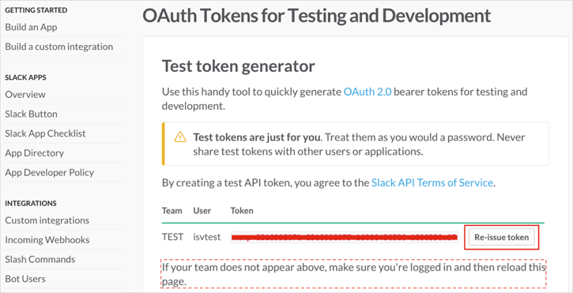
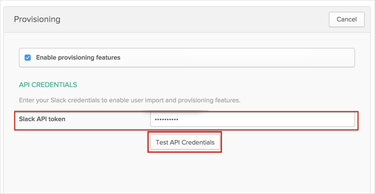
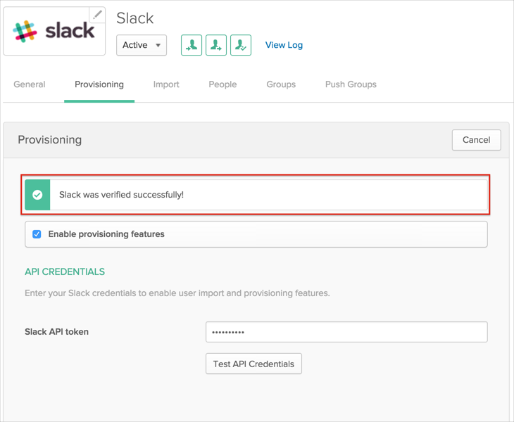
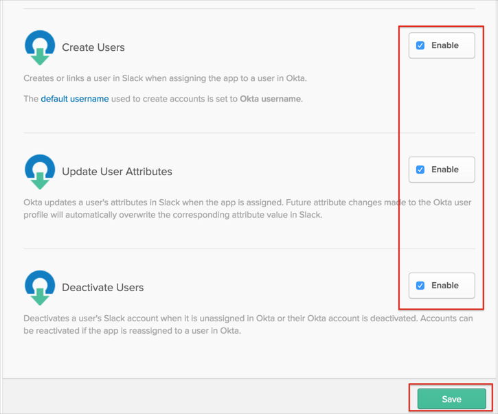

This guide provides the steps required to configure Provisioning for Slack.
Notes:
If you are enabling provisioning after already having users assigned to Slack SSO, be sure to run a full import to link the existing assigned user to the Slack user.
Slack provisioning requires you to be using the Slack Plus edition.
Make sure that your Slack organization has a Plus Plan subscription. It is required for Slack to get you access to Slack SCIM API.
The following provisioning features are supported:
Push New Users
New users created through OKTA will also be created in the third party application.
Push User Deactivation
Deactivating the user through OKTA will remove the user from the organization and all teams in the third party application.
Push Profile Updates
Updates made to the user's profile through OKTA will be pushed to the third party application.
Import New Users
New users created in the third party application will be downloaded and turned in to new AppUser objects, for matching against existing OKTA users.
Import Profile Updates
Updates made to a user's profile in the third party application will be downloaded and applies to the profile fields stored locally in OKTA. If the app is the system of record for the user, changes made to core profile fields (email, first name, last name, etc) will be applied to the Okta user profile. If the app is NOT the system of record for the user, only changes made to app-specific fields will be applied to the local user profile.
Group Push
Groups and their members can be pushed to remote systems. More about using group push operations you can find here: Using Group Push.
Reactivate Users
Reactivating the user through Okta will reactivate the user in the 3rd party application.
Complete the following before you configure provisioning for Slack:
Obtain a full-access API bearer token for your Slack Team: https://api.slack.com/docs/oauth-test-tokens.

Configure your Provisioning settings for Slack as follows:
Check the Enable provisioning features box.
Under API Credentials enter your Slack API token:

Click Test API Credentials. If your credentials are valid, you’ll see a success message:

Scroll down and enable the Provisioning Features you want to use for this app:

Click Save.
You can now assign people to the app, if needed.
If you see any provisioning errors, please make sure you verified the following list of tips:
Make sure that you configured Slack app with correct token (https://api.slack.com/docs/oauth-test-tokens)
Make sure that your Slack organization has Plus Plan subscription.